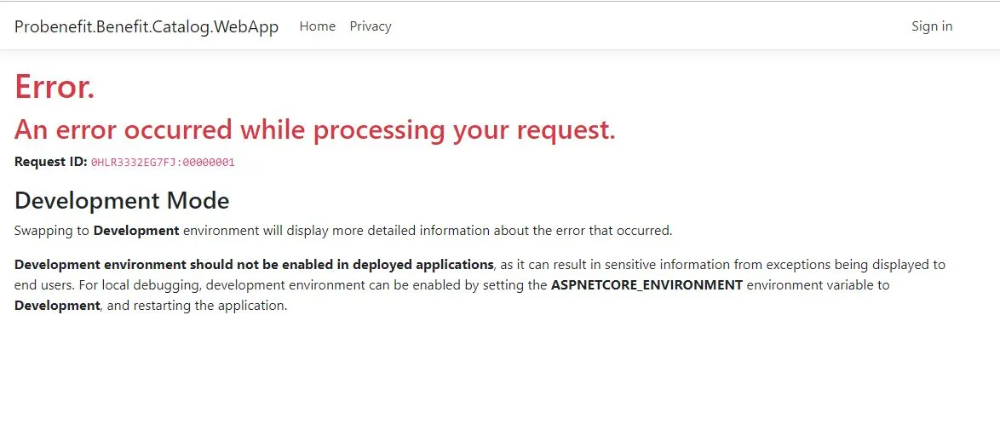

An agent that tracks dependency changes
Originally posted on LinkedIn, July 7, 2026.
We almost broke production because of an update no one on our team had noticed. Vercel AI SDK, one of the libraries we depend on, released a version with breaking changes. When we tried to implement a solution that existed only in the newer version, we realized the problem went far beyond upgrading our code.
This happens with every library and SDK. Models suddenly stop being supported, while new AI features ship so frequently that we miss some of them.
Instead of only upgrading the version and fixing the resulting breakage, Ori Shavit, a developer on our team, built an automation. Once a week, on Sundays, it sends a Slack message covering everything that changed in the libraries and models our team depends on: what was added, what is no longer supported, and which announcements need our attention.
That is how we caught a model that will stop being supported in December and created a task to handle it soon. It also keeps us current on new features that can improve the project.
Delegating update tracking to an agent is a good example of using AI in engineering teams for more than code completion. It can also keep the team synchronized and informed.
